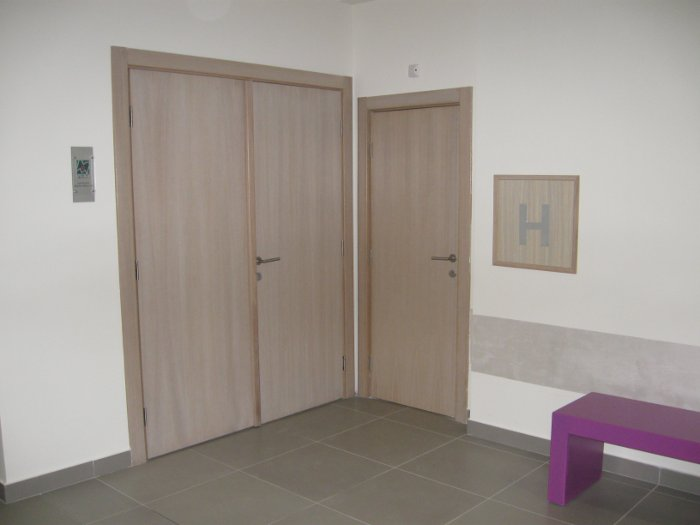

Parket lajsne - Rezana građa - Nameštaj i opremanje - Vrata
Šta je potrebno za kvalitetna drvena vrata?
Vrata se mogu podeliti na više kategorija i to na ulazna vrata, unutrašnja ili sobna vrata, balkonska, sigurnosna, vatrozadrživa... Podela je svakako uslovljena namenom vrata kao i materijalom koji se koristi za izradu. Kvalitet materijala koji mogu biti upotrebljeni je određen posebnim standardima. Materijali koji se koriste takođe zavise od namene i izgleda vrata.Koriste se razne vrste drveta, ploča, furnira, lamelirano drvo, iverice...

|
||
| Prednosti vrata izradenih od materijala na bazi drveta su višestruke. Drvo je prirodan materijal koji kada se unese i ugradi daje domu veliku dozu topline, uvek je u trendu, eko loški je čist materijal i može da se preradi u bezbroj oblika i boja. Takođe drvo je dobar toplotni i zvučni izolator koji ,,diše" i ako se dobro održava može da traje decenijama i da krasi vaš dom. | ||

|

|

|
| Ulazna vrata se prave od punog drveta i mogu se ugrađivati u kombinaciji sa drugim materijalima npr- sa staklom. Drvo od kojih se izgrađuju elementi vrata mora biti zdravo i bez grešaka koje mogu bitno da umanje mehanička svojstva vrata. Materijal mora biti visokog kvaliteta i veštački osušen a koriste se najčešće lišćari (hrast, bukva, jasen, trešnja), četinari (jela, smreka i bor), kao i egzote (mahagoni i meranti.). U poslednje vreme za izradu ulaznih vrata koriste se i razne vrste termo-tretiranog drveta koje ima svoje velike prednosti. | ||
|  | ||
{kind=link}
{kind=link}
{kind=link}
{kind=link}
{kind=link}
Kod ulaznih vrata štok i plot (krilo) su izrađeni od masiva. Ova krila mogu biti jednokrilna, jednoipokrilna i dvokrilna. Takođe mogu biti sa i bez nadsvetla. Površinska obrada se uglavnom radi sa vodenim lakovima i to u bar dva sloja sa obaveznim međubrušenjem. Takođe drvo pre lakiranja može biti bajcovano i tonirano po želji investitora i prilagođeno boji enterijera. Sva vrata moraju imati okov: tri šarke raznih vrsta, bar jednu usadnu bravu, jedan par kvaka i prihvatnik.
Unutrašnja vrata u zavisnsti od materijala koji se koristi pri izradi možemo podeliti na:
- Vrata od folije
- Craft master
- MDF
- MDF i furnir
- Puno drvo

|

|
{kind=link}
{kind=link}
{kind=link}
Gotova vrata uradjena u kombinaciji MDF i furnir se sastoje iz štoka (ragastol), plot (krilo), opšivne lajsne (pervajz) i okova. Štok može biti urađen na više načina. Na primer: prvo se pravi ploča od elemenata masiva iz kojeg su izbačene greške. Takvi elementi se dužinski i širinski spajaju i dobija se ploča od masiva. Najčešće vrste za izradu tih ploča su lipa, jela i smreka. Ploče se zatim mašinski obrađuju i pripremaju za fazu u kojoj se na njih lepi MDF 4mm obostrano. Posle toga se štok profiliše, falcuje, runduje i nakon čega se sa svim dobijenim krivinama furnira. Plot (krilo) se pravi tako što se na podkonstrukciji od masiva lipe, jele ili smreke MDF 6mm sa obe strane. Sa strane se stavljaju ojačanja za bravu koja su takođe od masiva a u sredini kartonsko saće. Tako dobijen plot se oblaže plemenitim furnirima od 0.6mm. Nakon toga se vrši formatizovanje, bušenje, kantovanje... Pervajzi (opšivne lajsne) se rade od MDF 18mm i MDF 8mm koji se iskroje u lajsne nakon čega se lepe, zatim se profiliše i oplemenjuje furnirom. Tako dobijeni štelujući ili plivajući pervajz se koristi da se “ispeglaju” različite debljine zidova koji su čest slučaj na objektima. Površinska obrada se radi poliuretanskim i vodenim lakovima i bajcevima.
Tonovi su neograničeni a takođe se može raditi lakovima bez sjaja (mat) ili u određenim procentima sjaja. Svi navedeni materijali omogućavaju da se vrata po obliku, dizajnu, boji i sjaju potpuno uklope u postojeći enterijer svakog stana, kuće ili poslovnog prostora.